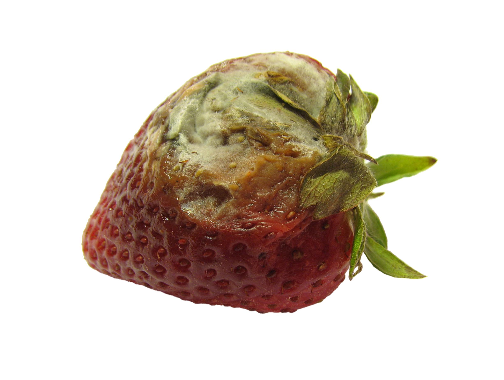

Approximately one-third of all food produced globally, or about 1 billion tons, is wasted each year. In the United States alone, nearly 60 million tons (120 billion pounds) of food are discarded annually, making up about 40% of the country’s food supply. This translates to roughly 325 pounds of food wasted per person every year, or approximately 145 billion meals that go to waste. When considering food waste in terms of calories, it equates to 24% of the world’s total food supply, which is a staggering amount.

Food waste in the U.S. is driven by a mix of consumer behaviors and systemic inefficiencies. A major cause is the confusion surrounding expiration labels—over 80% of Americans discard food because they misinterpret labels like "sell by," "use by," or "best before," leading to unnecessary waste. Additionally, poor food management practices in both homes and businesses contribute to the problem. Retailers often reject imperfect produce, and food providers struggle with demand forecasting, resulting in surplus items being discarded. On the consumer side, waste occurs due to overbuying, improper storage, and a lack of awareness about how to use up or preserve food. Societal norms, where wasting food is often seen as acceptable, further exacerbate the issue, making it a complex challenge that spans personal habits and broader systemic practices.
